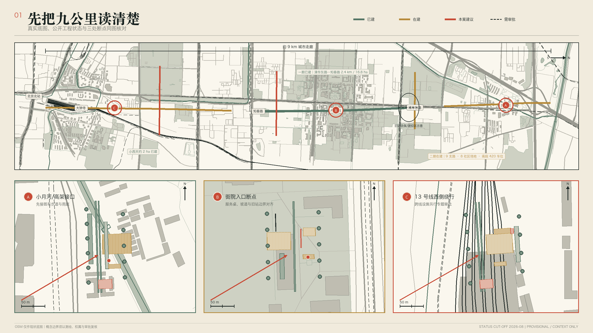
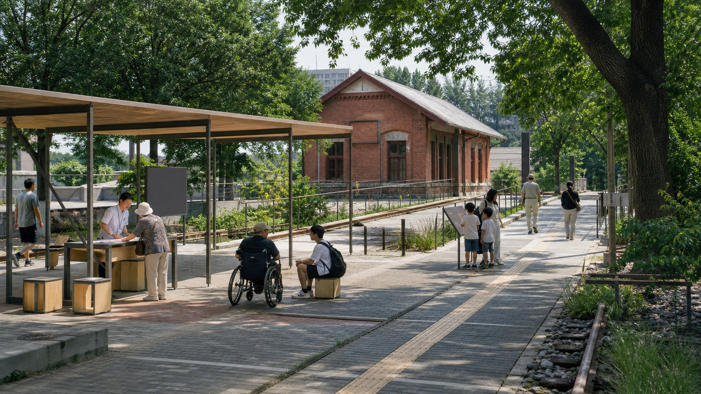
2.4 km一期已建开放 16.8 ha
二期在建已公布九条支路与八处社区活动场地
9 km遗址公园公开规模 约 70 ha
只补接口已建与已批工程沿用原方案，不重复署名
02 SCALE
从现状走到总图
九公里看贯通，八百米看街区，一百二十米看门和坡道。
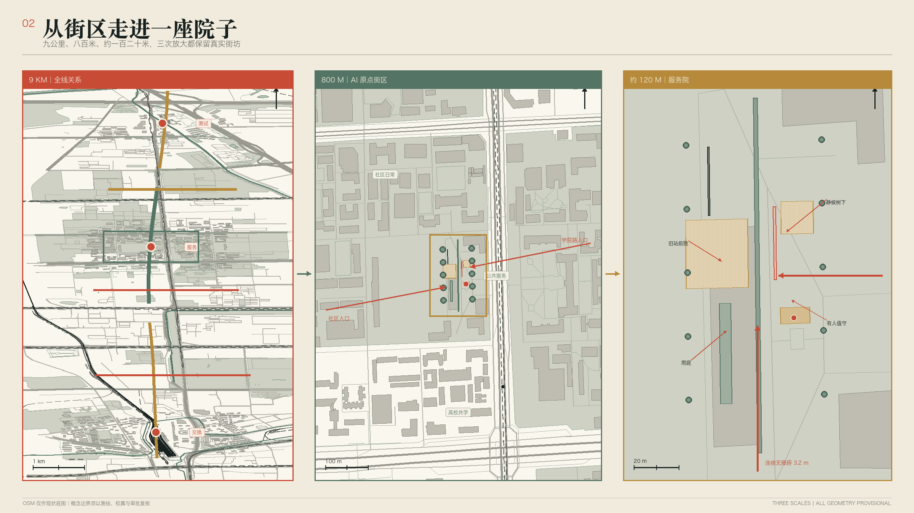
03 COURTS
三处院落，同尺画清
入口、树冠、雨庭、测试边界与值守位置都落在平面和剖面里。
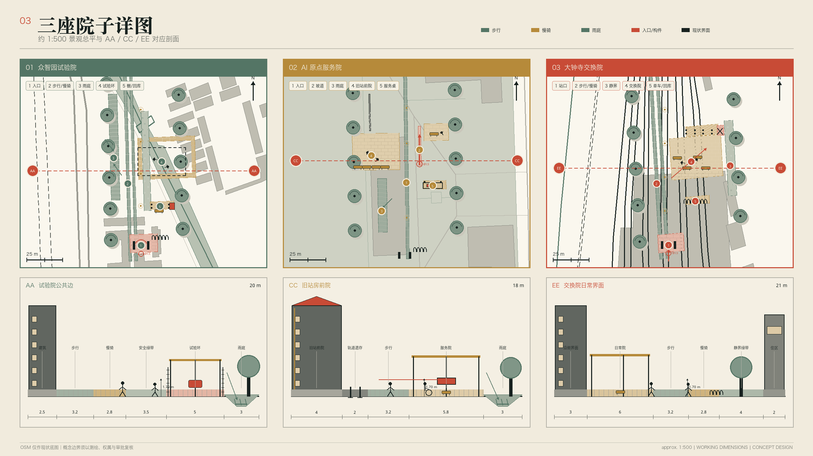
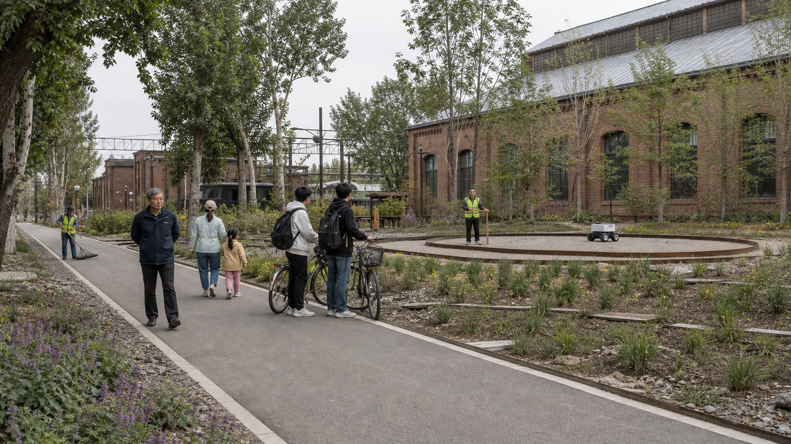
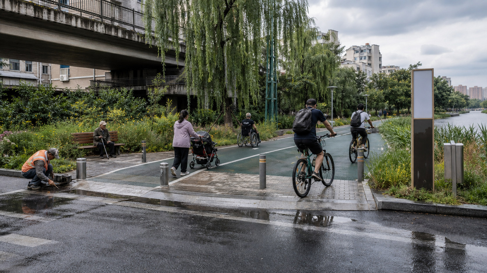
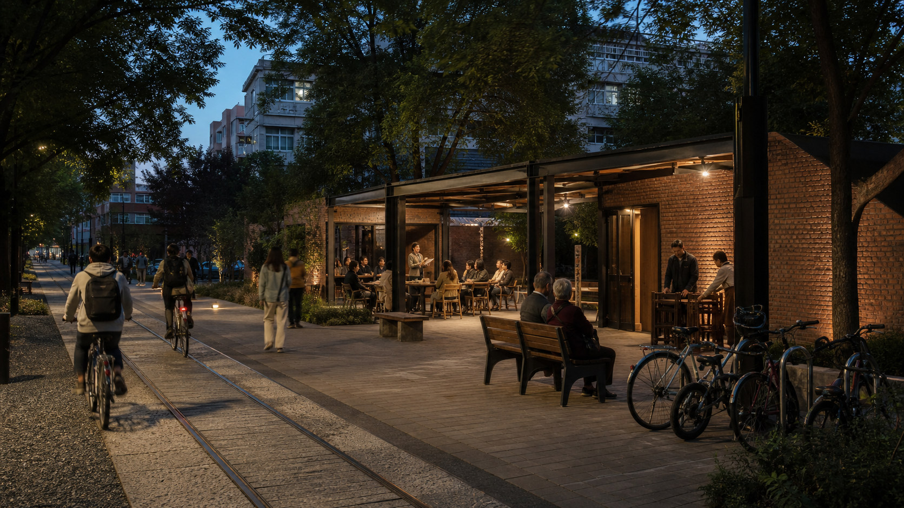
概念场景只说明使用方式与空间尺度，不作为现状照片或批准方案。
04 SECTION
慢行先落到剖面
步行、骑行、轨道与小月河接口逐段核对，窄处怎样让行也画出来。
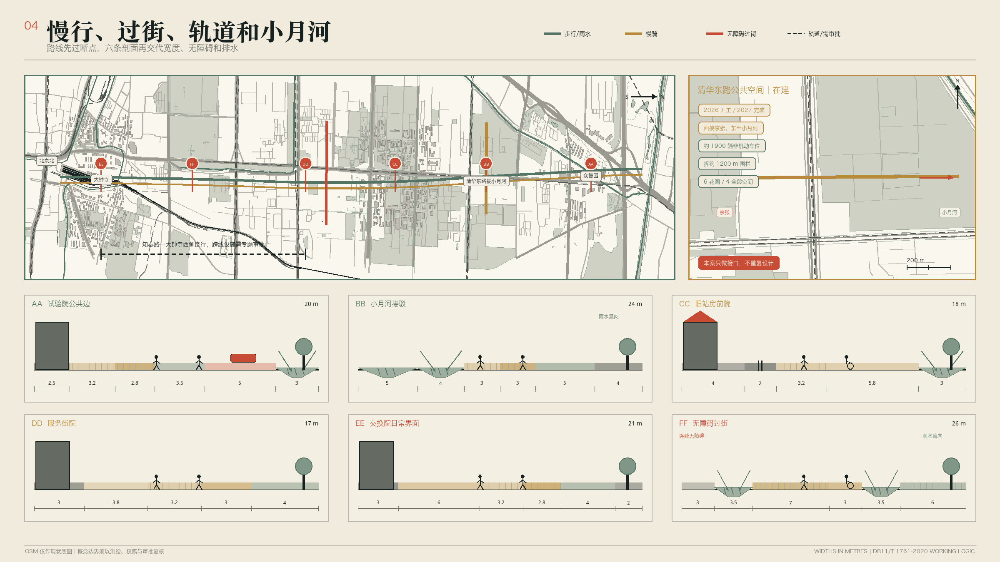
05 / 06 DAILY
一天怎么过，三百米怎么走
早高峰先通行，白天有人服务，傍晚开小课，测试留在围栏里。
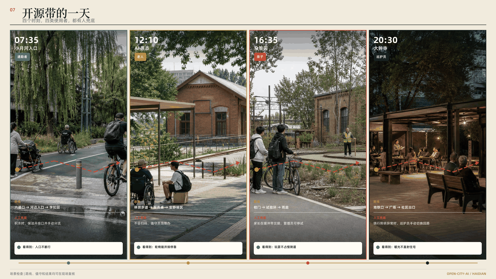
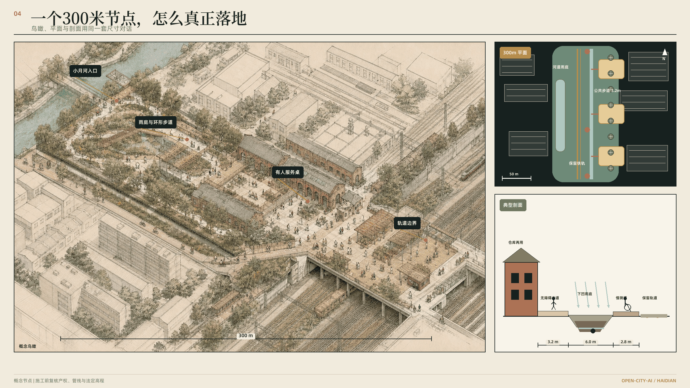
07 / 08 BUILD
构件能拆，分期能停
尺寸、接头、管养人和退出条件一起看，先做小样，再决定要不要留下。
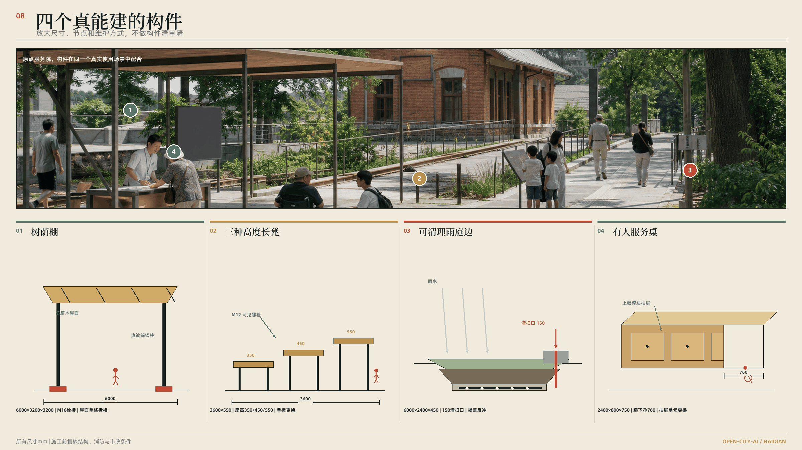
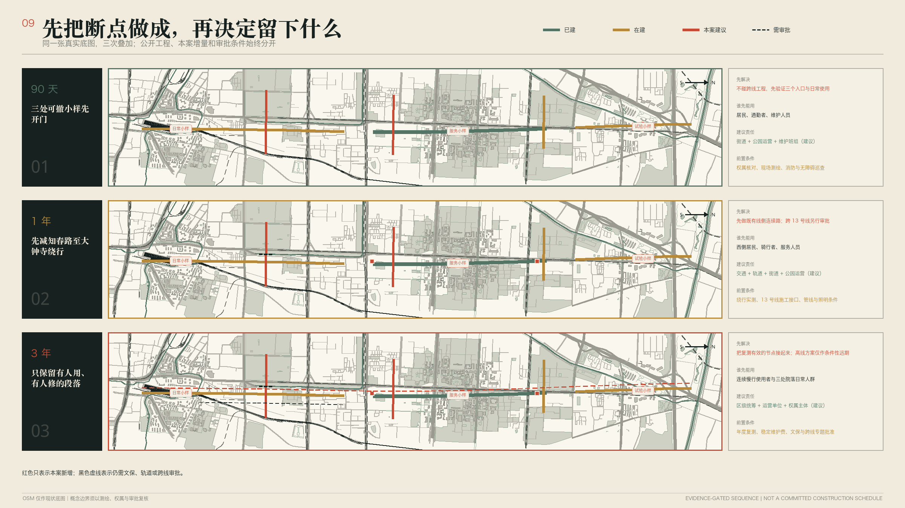
09 / 10 CHECK
服务怎么查，沿线怎么认
可复算的数留在图上，待测项目留空；入口牌直接告诉人下一站在哪里。
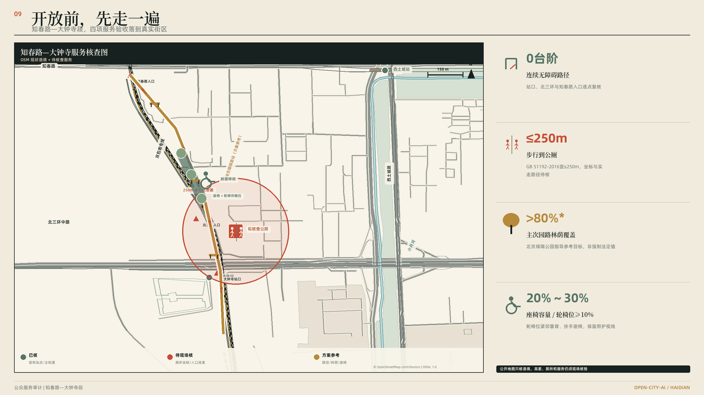
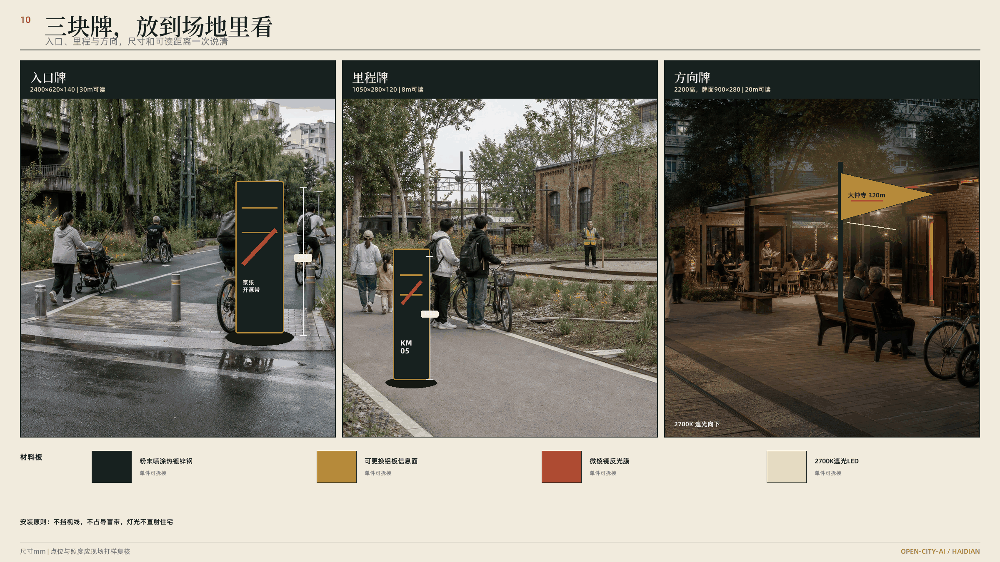